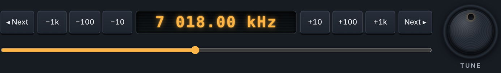
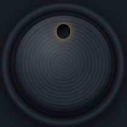
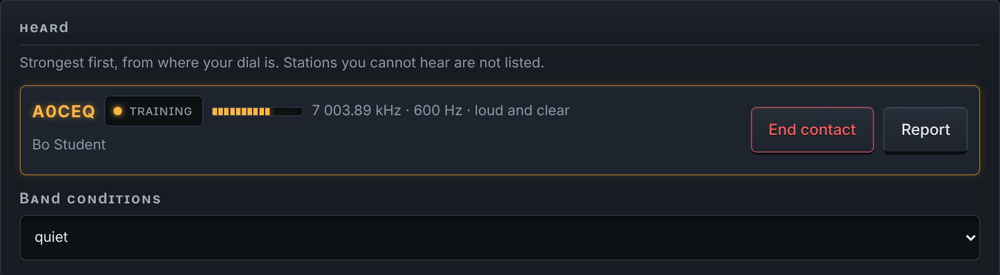
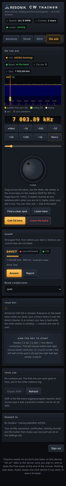
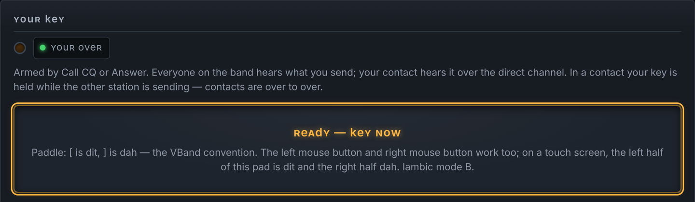
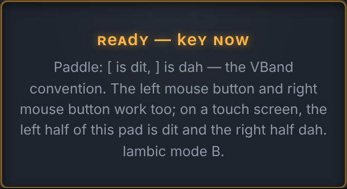

فهرست
فصل 7زبانهٔ On air — تماس با دیگر اعضا
این باند مجازی است. عضوی را از فهرست برنمیگزینید. فرکانسی را برمیگزینید، و دیگران هم همین کار را میکنند؛ با تیون کردن در طول باند میشنوید سیگنالها میآیند، به فرکانس درستشان بالا میروند و با گذشتن شما دوباره محو میشوند — پس میشود کسی را از دست بدهید، دقیقاً مثل روی هوا. تماسها با کلید خودتان، زنده، انجام میشود و در دفتر هر دو ایستگاه ثبت میشود.

7.1ورود و ساخت حساب

تماس زنده حساب لازم دارد: نام (آنطور که میخواهید شنیده شود)، نشانی ایمیل و گذرواژهای دستکم دهحرفی، و نشان تماس اگر دارید. گذرواژه هیچوقت ذخیره نمیشود، فقط هَشِ یکطرفهاش. گذرواژهٔ فراموششده از راه Forgotten password جایگزین میشود: پیوندی به ایمیلتان میآید که یک بار و تا یک ساعت کار میکند.
پیش از آنکه دوباره درخواست کنید، پوشهٔ اسپم یا جانک را ببینید. سرور از نشانیای میفرستد که شما هرگز به آن ننوشتهاید، و برخی سرویسها اولین نامه از چنین نشانیای را آنجا میگذارند؛ علامت زدن «اسپم نیست» نامهٔ بعدی را در صندوق ورودی نگه میدارد. پیوند یک بار و تا یک ساعت کار میکند، پس اگر پیوند قدیمی منقضی شده، بهجای دنبال کردن نامهٔ قدیمی از Forgotten password پیوند تازه بخواهید.
اگر هنوز مجوز ندارید
نشان تماس را خالی بگذارید. یک شناسهٔ آموزشی میگیرید که شکل نشان تماس دارد تا دریافتش همان تمرین باشد، اما هیچ ایستگاه واقعی در هیچجا نمیتواند داشته باشد: با A0 آغاز میشود، سریای که ITU هرگز صادر نمیکند، و در پی آن حروف اول نامتان تا جایی که آزاد باشد — پس Anna Maria Rossi میشود A0AMR. هرجا ظاهر شود «training» برچسب دارد، تماسهای زیر آن از خروجی ADIF بیرون نگه داشته میشوند تا کسی تصادفی تمرین را به جایزهٔ واقعی نفرستد، و وقتی مجوز گرفتید نشان تماس واقعی کنارش اضافه میشود.
تأیید نشان تماس
نشان تماسی که ادعا میکنید پیش از آنکه مال شما به شمار آید، مدیر تأییدش میکند. تا آن وقت میتوانید تمرین کنید و روی باند بروید، اما نشان تماستان هرجا ظاهر شود unconfirmed برچسب دارد و هیچ تماسی با شما قابل خروجی نیست — تا کسی نتواند در دفتر عضو دیگر بهعنوان اپراتوری که نیست ظاهر شود. شناسهٔ آموزشی تأیید نمیخواهد؛ خودِ برنامه صادرش کرده.
اگر از دستگاه دومی وارد شوید، دستگاه اول از باند خارج میشود — نمیتوانید دو بار روی فرکانس باشید. هیچچیز از حساب شما با هیچکس دیگر به اشتراک گذاشته نمیشود، و تنها صفحهٔ وبی که اجازهٔ گفتوگو با سرور دارد همین صفحه است.
7.2چراغهای وضعیت
ردیف نشانها در بالای پنل، خطِ وضعیت دستگاه شماست. هر یک چراغی دارد: کهربایی برای شما، سبز برای خوب، خاکستری برای خاموش، سرخ برای مشکل.
7.3اسکوپ باند و آبشار

اسکوپ باند همان باند است، ۷۰۰۰ تا ۷۰۴۰ کیلوهرتز، همانطور که یک SDR میکشد: طیفی در بالا و آبشاری در زیر که با سرعت یکنواخت پایین میلغزد. ایستگاه فقط وقتی کلیدش پایین است بهصورت قلهای در طیف و ردّی روشن در آبشار دیده میشود، پس دیتها و داها را میبینید که میگذرند. نمایشگر کدی را که فرستاده میشود نشان میدهد، نه حاملی که هرگز نمیجنبد — حامل ساختگی به شما میآموخت به تصویر بیش از گوش اعتماد کنید. کف نویز با شرایط باندی که برمیگزینید بالا و پایین میرود.
هر ایستگاه نشان تماسش را بالای شیشه دارد. کهربایی یعنی از جایی که دایال شماست میشنویدش؛ حلقهٔ سبز یعنی CQ میزند؛ خط سرخ دایال شماست و نوار روشنتر دو سویش گذرباند گیرندهٔ شما. ایستگاههای روی یک فرکانس یا نزدیک آن یک برچسب مشترک دارند — دو قویتر به نام و «+3» برای باقی، مثل پایلآپ — و فهرست Heard زیرِ آن همه را نام میبرد.
- برای تیون روی شیشه بکشید؛ دایال دنبال انگشت یا نشانگر شما میآید.
- نشانگر یک ایستگاه را بفشارید تا دقیقاً روی آن بنشینید.
- راهنمای زیر شیشه هر رنگ بهکاررفته را نام میبرد.
7.4VFO: نمایشگر، ولوم و دکمهها




ولوم تیون کنار نمایشگر همان VFO است. دورش بکشید و دایال دنبال زاویهٔ انگشت یا نشانگر شما میآید: یک دور کامل دقیقاً ۱ کیلوهرتز است، در صد گام ۱۰ هرتزی، که حسّ یک دستگاه مدرن در گام ریزش است. چرخ ماوس روی ولوم هم گام میزند، همچنین کلیدهای جهتدار وقتی فوکوس دارد؛ Shift را برای گام ۱۰۰ هرتز نگه دارید و Page Up / Page Down برای ۱ کیلوهرتز.
با دکمههای Next از سیگنالی به سیگنال دیگر در طول اسکوپ بپرید، بعد با ولوم چند هرتز آخر را. ایستگاه وقتی دقیقاً روی آن تیوناید با فرکانس سایدتون شما به گوش میرسد، وقتی دایالتان پایین است زیرتر، و وقتی بالاست بمتر. درست به گوش رساندن ایستگاه، زیرو-بیت کردن است، و مهارتی است که این رابط برای آموختنش هست.
7.5فهرست Heard


Heard آنچه از جای دایال شما شنیدنی است را فهرست میکند، بلندترین اول، هر یک با نوار سیگنال (S-متر)، فرکانسش، فرکانسِ صوتیای که برای شما دارد، و گزارشی به زبان ساده مثل «loud and clear». ایستگاهی که زیادی ضعیف یا زیادی دور از دایال شماست صرفاً آنجا نیست، مثل روی هوا. زیر نشان تماس هرچه ایستگاه در پروفایلش گذاشته — نام، QTH، دستگاه — آمده، همانطور که در تبادل میفرستاد.
خطِ لینک زیر ایستگاهی که با او در تماساید میگوید اتصال چه میکند: چند حرکت کلید رسید، چند تا دیر رسید، و تأخیر در حال استفاده. وقتی تأخیر به نیم ثانیه برسد یا بستهای گم شود سرخ میشود. این شبکهٔ شما یا اوست، با همین کلمات — هرگز به شکل شرایط بد باند جلوه داده نمیشود و نمیگذارد ارسال بد به نظر برسد.
شرایط باند
گزینهٔ Band conditions زیر فهرست Heard همان کف نویز و پارازیت را زیر هر ایستگاهی که میشنوید میگذارد، از همان فیلتر گیرنده، پس تماس در نویز انجام میشود نه در اتاق ساکت. فیدینگ (QSB) پیشتنظیم روی هر ایستگاه مینشیند و کف نویز روی اسکوپ دنبالش میآید. خودِ ایستگاهها در همان سطحیاند که فهرست Heard برایشان نشان میدهد.
7.6CQ زدن، و جواب دادن
برای صدا زدن
- Find a clear spot را بزنید. دایال به فرکانسی میرود که کسی نزدیکش نیست.
- Call CQ here را بزنید. کلید شما مسلح میشود، بهعنوان صدازننده نشاندار میشوید (حلقهٔ سبز روی اسکوپ)، و دکمه «Calling CQ here» میشود.
CQ CQ CQ DE <نشان شما> <نشان شما> Kرا روی کلیدتان بفرستید. همه روی باند آن را با زیر و بمیای که دایال خودشان میدهد میشنوند.- وقتی کسی جواب دهد، تماس خودش وصل میشود: چراغ Contact «connecting…» و بعد «connected» میشود، و ایستگاهش با End contact کنارش در Heard میآید.
برای جواب دادن
- ایستگاهی را که CQ میزند پیدا کنید — حلقهٔ سبز روی اسکوپ، یا ردیفی در Heard با «calling CQ». اگر روی آن نیستید Tune to را بزنید.
- Answer را بزنید. دایال شما روی آن میرود، اتصال مستقیم برپا میشود (چند ثانیه) و کلید شما مسلح میشود.
<نشان او> DE <نشان شما> <نشان شما> Kبفرستید، بعد همانطور که روی هوا میکردید با او کار کنید: گزارش، نام، QTH و… (فصل ۶ شکلش را دارد).
Listen here شما را بیصدا زدن روی فرکانس کنونیتان به باند میآورد — همه را میشنوید و همه شما را روی اسکوپ میبینند، اما کلیدتان مسلح نمیشود. End contact تماس را میبندد؛ همان لحظه به هر دو دفتر میرود. Leave the band شما را از هوا خارج میکند: تا برگردید کسی شما را نمیشنود و شما کسی را نمیشنوید.


7.7کلید شما، و نوبتبهنوبت


پنل Your key با Call CQ یا Answer مسلح میشود. همه روی باند آنچه میفرستید میشنوند؛ طرف تماس شما آن را از کانال مستقیم میشنود. پد همان کلیدها، دکمههای ماوس و پدال زبانهٔ Send را میگیرد، با نوع کلید و مُد iambic که آنجا تنظیم کردید.
تماسها نوبتبهنوبتاند. یکپنجم ثانیه یا بیشتر بافر، وسط حرف پریدنِ واقعی را ناممکن میکند، پس برنامه تا ایستگاه مقابل میفرستد و تا دو و نیم ثانیه پس از آخرین عنصرش، کلید شما را نگه میدارد. پد کهربایی میشود و «Their over» مینویسد، و چراغ کنارش نشان میدهد نوبت کیست. کلید زدن در این مدت صدایی نمیدهد و چیزی نمیفرستد؛ این خطا نیست، ایستگاه مقابل هنوز میفرستد. وقتی نگهداری برداشته شد، پد «Ready — key now» و نشان «your over» میشود.

روی تلفن یا تبلت



پدِ کلید پدال شماست: نیمهٔ چپ دیت، نیمهٔ راست دا، و دو شست دقیقاً مثل دو پدال میفشارند. در مُد کلید ساده کلّ پد کلید است. همان پد در زبانههای Send و QSO هم کار میکند.
7.8چه چیزی میان شما رد میشود، و تأخیر
صدا نه. زمان فشردن و رها کردن کلید شما فرستاده میشود و تُن دوباره در مرورگر عضو مقابل با هر فرکانسی که او میخواهد تولید میشود. چیزی فشرده نمیشود، پس چیزی خراب نمیشود، و کلّ تماس چند بایت در ثانیه خرج دارد.
هر سو آنچه میرسد را حدود ۲۰۰ میلیثانیه پیش از نواختن نگه میدارد، که همان است که میگذارد زمانبندی دقیقاً بازسازی شود و به بستههای دیررسیده وقت رسیدن میدهد. وقتی یکی همچنان دیر است، همان لحظه که میرسد نواخته میشود — هرگز دور انداخته نمیشود، چون عنصر گمشده مثل خطای ارسال به گوش میرسید — و تأخیر بزرگ میشود تا بعدیها بهوقت باشند. میان نوبتها، تأخیر اگر بتواند کوچک میشود. روی اتصال خوب در ۲۰۰ میلیثانیه میماند؛ روی تلفن با وایفای شاید در نیم ثانیه یا بیشتر بنشیند، و نوبت اول تماس تا یاد بگیرد ناهموار به گوش میرسد.
روی اتصال سیمی، وایفای خانگی و میان کشورها، عنصرها دقیقاً همانطور که فرستاده شده میرسند — هیچ خطایی. روی وایفای هتل و روی تلفن اغلب بهوقت نمیرسند و برنامه همانطور که گفته شد دورش میزند. خطِ لینک در Heard نشان میدهد در کدام حالتاید. هرگز نباید با دستخطی تمرین کنید که اتصال در راه خرابش کرده.
تلفن، قفل صفحه و اتصال دوباره
تلفنها با قفل شدن صفحه یا تغییر اپ، اتصال به سرور را میاندازند. وقتی برگردید برنامه بیدرنگ دوباره وصل میشود، شما را روی فرکانستان برمیگرداند، و هر تماسی که در آن بودید را میبندد — به ایستگاه مقابل گفته شده که رفتید — پس دوباره صدا بزنید یا جواب دهید. اگر چراغ Band «reconnecting» میگوید، پیش از کلید زدن منتظر «on the band» بمانید. برنامه هر پانزده ثانیه اتصال را میسنجد و اگر سرور ساکت شده خودش دوباره وصل میشود، پس ایستگاهی که واقعاً رفته در حدود نیم دقیقه از باند همه ناپدید میشود.
7.9دفتر شما، RST و خروجی ADIF

هر دو سو همان لحظه که تماس تمام میشود آن را خودکار در دفترشان میگیرند؛ Your log آنها را نو به کهنه فهرست میکند. هر ردیف سه کادر برای تبادل دارد: RST که فرستادید، RST که گرفتید، و یادداشت. 5NN یا 599 بنویسید، هر دو پذیرفته است؛ مقدار وقتی از کادر بیرون میروید ذخیره میشود. اینها روایت خودِ شما از تماس است؛ ایستگاه مقابل روایت خودش را دارد.
Export ADIF فایلی را دانلود میکند که هر برنامهٔ لاگینگ وارد میکند — یک رکورد برای هر تماس با نشان تماس ایستگاه مقابل، تاریخ و ساعت به UTC، فرکانس، باند، مُد، و RST و یادداشت اگر نوشتهاید. Refresh فهرست را از سرور دوباره بار میکند.
دو چیز عمدی است. تماس با شناسهٔ آموزشی در دفتر شما میماند اما هرگز صادر نمیشود، چون A0 نشان تماس نیست و هیچ برنامهٔ لاگینگی نباید آن را بهعنوان نشان تماس بگیرد. و هر رکورد صادرشده در توضیحش میگوید که تماس تمرینی روی این باند مجازی بوده، نه QSO روی هوا، تا دفتری که با دفتر واقعیتان یکی شده همچنان دربارهٔ هر ردیف راست بگوید. تماس با نشان تماس تأییدنشده هم تا تأیید شود بیرون نگه داشته میشود.
7.10گزارش مشکل با ایستگاه دیگر
مدیر میتواند تماس فعال را پایش کند و عضوی را بیصدا یا حذف کند. شما میتوانید از درون تماس و بیآنکه اول بیرون بروید سوءرفتار را گزارش کنید: Report روی ردیف ایستگاه میپرسد چه شد و آن را همراه رونوشتی از آنچه آن ایستگاه فرستاد — دیکودشده در مرورگر شما، آنطور که ماشین دریافت میکند — برای مدیران میفرستد. هیچچیز از آنچه شما فرستادید در آن نیست، و هیچ رونوشتی در هیچ زمان دیگری نگه داشته یا نشان داده نمیشود — دریافت با گوش همان هدف است.
اگر مدیری شما را بیصدا کرده باشد، چراغ You و پدِ کلید میگویند: «You are muted and cannot transmit at the moment.» بیصدا کردن ۲۴ ساعت میماند مگر مدیر زودتر برداردش.
7.11برای مدیران

عضوی که نقشش مدیر است، زبانهٔ تازهای به نام ADMIN در انتهای نوار زبانهها میبیند. وقتی چنین عضوی در زبانهٔ On air وارد میشود پیدا میشود و با خروجش میرود؛ هیچ عضو دیگری هرگز آن را نمیبیند. چهار کار مدیر در آن است و نه بیشتر:
خطِ بالای فهرست، اعضا را میشمارد، نه ردیفها را. حساب حذفشده عضو نیست: سرور ردیف را خالی میکند و نگه میدارد تا دفتر نظارت و تماسهای ثبتشده در دفتر اعضای دیگر همچنان به چیزی اشاره کنند. پس سه عضو و یک حساب حذفشده 3 members · 1 deleted خوانده میشود، و حذفشدهها زیر فهرست تا میشوند تا اگر خواستید بازشان کنید.
هر کار دلیل میخواهد و با آن ثبت میشود. حذف بازگشتناپذیر است.
پنهان بودن این زبانه از دید بقیه فقط رابط را مرتب میکند و از چیزی محافظت نمیکند. محافظت با سرور است که هر درخواست مدیر را از حسابی که مدیر نیست رد میکند، چه زبانه روی صفحه باشد چه نباشد.